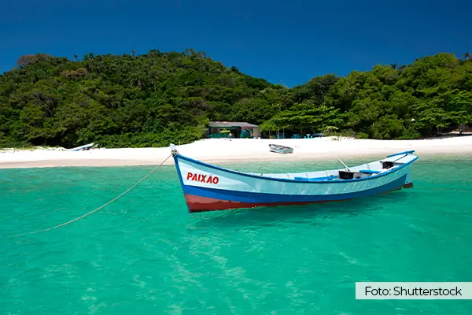

About me
Hi I am Kevin Flores, I am 26 years old, I am married with a beautifoul wife called Lourdes, we have been together for a long time, like 10 years, however we have 2 years married. We are argentinian people but we are living in Florianopolis Brasil due to have economic problems in our country, we would like to come back but we cannot for the moment. We work from home, home office, in an USA company that gives service for people located there, and I thought as I know english I could study in BUY Idaho online to get better my aknowlage of programming web Full Stack that I was learning before to start. I hope I can learn a lot being here for those 3 years. I know a lot of Java, Java Script and HTML CSS, but I wanted to get a review and improuve what I do not know.
Florianopolis, Brasil
Florianopolis is a beautifoul city where you can find people from everywhere. It has more than 100 beaches it is like a paradise. Florianopolis is the capital of Santa Catarina, the most security state of Brazil, and is chosen by many people both from Brazil and elsewhere like Argentina, Cuba, Venezuela, Chile, etc. For example I am Argentinian and I am living here.